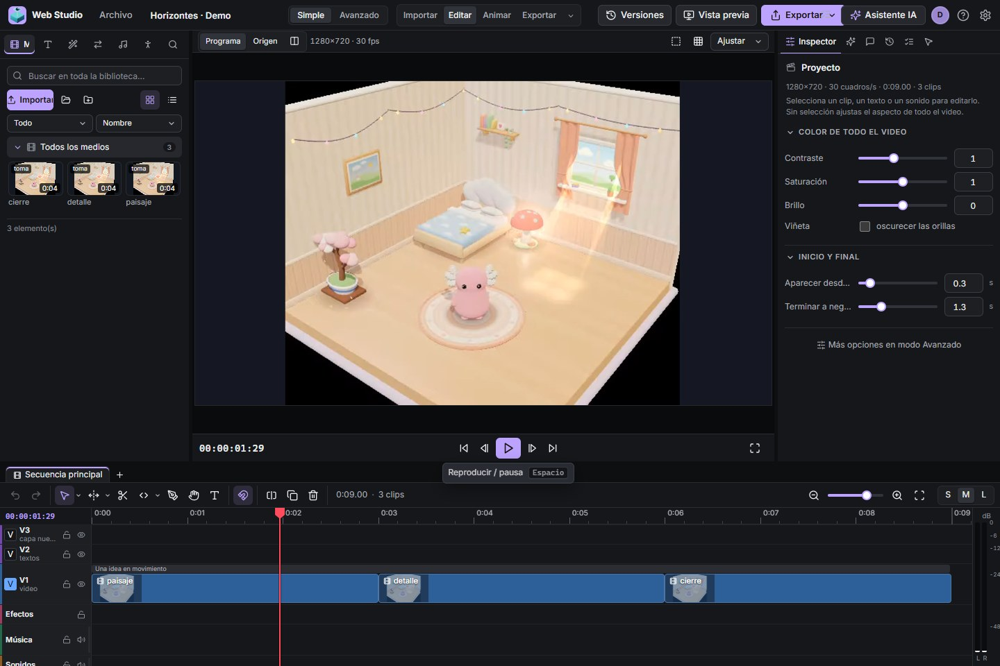

Un editor con asistente
Un editor al estilo de CapCut o Premiere, con biblioteca de medios, visor, inspector y línea de tiempo, más un asistente de IA con el que se platica en español.
Web Studio es un editor de video que corre en tu computadora y se usa desde el navegador. Arrastras tus grabaciones, música y logo, le cuentas a la IA qué video quieres y arma una línea de tiempo multipista (varias capas de video, audio y texto) que puedes seguir editando a mano. Exporta a MP4 o a un proyecto de Premiere Pro o DaVinci Resolve.
Demo del frontend · datos ficticios · sin servicios empresariales conectados.

Un editor al estilo de CapCut o Premiere, con biblioteca de medios, visor, inspector y línea de tiempo, más un asistente de IA con el que se platica en español.
Pasar de una idea a un video terminado exige coordinar medios, cortes, música, voces, subtítulos y exportación. Es lento y repetitivo, sobre todo cuando se hacen muchos videos parecidos.
Un LLM (modelo de lenguaje grande, el tipo de IA que entiende y escribe texto) convierte el pedido en un plan de edición. El motor valida el plan, lo dibuja en la línea de tiempo y lo renderiza.
Arrastra grabaciones, música y logo a la biblioteca del proyecto.
Describe el video. La IA pregunta para quién es, el formato y la duración, y propone ideas para elegir.
Corta, duplica y mueve clips en la línea de tiempo; afina cada uno en el inspector, en modo simple o avanzado.
Saca un MP4 o un proyecto para Premiere o DaVinci. Antes de entregar, un crítico interno revisa el resultado.
Cada cambio es una operación que el servidor valida y guarda con historial y versiones.
Biblioteca de medios, monitor de programa con reproducción fluida, inspector y línea de tiempo con varias pistas. Cada edición queda en un historial con versiones que se pueden recuperar, y la interfaz nunca muestra datos internos.
Voces sintéticas locales o de servicios externos, limpieza de la voz del micrófono y subtítulos automáticos a partir de la transcripción.
Si no subes una pista, compone música original ajustada a los cortes del video.
Antes de enseñar un video, lo renderiza en vista previa, mide volumen, primer cuadro y duración, pide una crítica visual a la IA y aplica los arreglos como parches al plan, hasta dos vueltas.
Pegas la liga de una app web: la captura con un navegador automatizado, toma su logo, colores y tipografías, y arma la promo.
Proyecto para Premiere Pro, DaVinci Resolve u OTIO (OpenTimelineIO, un formato abierto de líneas de tiempo), además de MP4.
Servidor local en Python con FastAPI, que expone una API (la interfaz con la que se comunican los programas). La interfaz es una página web local en HTML, CSS y JavaScript.
La IA no edita el video directamente: escribe un plan en JSON (un formato de datos en texto) que se valida contra un esquema antes de tocar la línea de tiempo.
El render lo hace FFmpeg, con codificación por GPU (la tarjeta gráfica) cuando la hay; sin GPU todo corre en el procesador.
El «cerebro» puede ser Claude Code o Codex, con OpenAI como opción. Ninguna pieza del editor depende de un solo proveedor.
Separación de voz, transcripción y detección de caras corren en la propia computadora; los modelos se descargan solos la primera vez.
Los proyectos exportados se reconstruyen y se comparan con el render del motor mediante PSNR (una medida de qué tan parecidas son dos imágenes). Las llaves de servicios se guardan cifradas por usuario.
Demo del frontend · datos ficticios · sin servicios empresariales conectados.